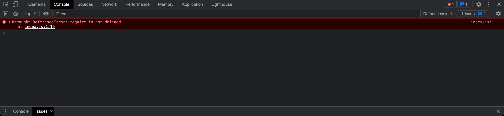
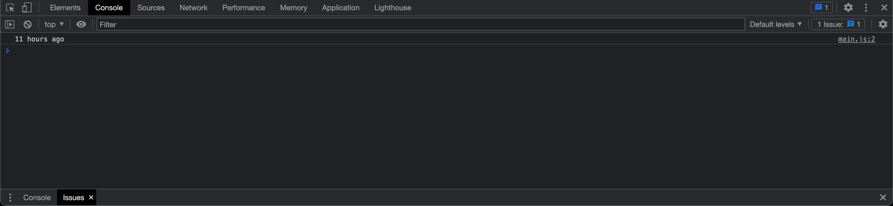

Why are module bundlers necessary?
Years ago, building a website typically only required HTML, CSS, and some JavaScript. As technology advanced, so did the complexity of websites. Nowadays, modern web applications use additional technologies like CSS preprocessors, frameworks, and third-party modules. These technologies make web development easier but also present a lot of new problems.
The size of modern web applications can get pretty big, which means load times and performance can drastically slow down. Additionally, everybody uses different web browsers, so you also need to make sure your web application is compatible across multiple browsers, which can be a nightmare.
To top it off, creating modern web applications usually means you'll be using modules. npm is the default package manager for node.js, the server-side runtime environment. Since JavaScript is client-side, this makes loading modules tricky; a lot of dependencies use the CommonJS syntax, which doesn't work with the modern ES6 syntax. If you try importing an npm module into a client-side JavaScript application, you'll probably get an error like this in the console:
...luckily, module bundlers fix all these issues.
How do module bundlers work?
A module bundler is a tool that gets around these problems by implementing a "build" step, which bundles all your files into one, browser-compatible JavaScript file. There's several module bundlers on the Internet, but the most popular is webpack. In this guide, I'll show you how to install and configure webpack so you can use modules on the client-side.
Installing webpack
webpack can easily be installed as a dependency through npm. Before installing webpack, create a new project in VS Code. By default,
webpack will assume the entry point of your project is src/index.js, so create a folder with that file
and then open the Terminal; install webpack by typing this into the command line:
$ npm install --save-dev webpack webpack-cli
...webpack is installed as a development dependency because it's not necessary for the final production build.
Next, check the package.json file to make sure everything installed successfully...
...after this, use a task runner by creating an npm script in the package.json
file...
// ...
"scripts": {
"build": "webpack"
},
// ...
...this script will execute the webpack command whenever you type npm run build into the
command line. webpack will then analyze the code inside the index.js file and compile it. By default,
webpack will output the result in dist/main.js. Now, instead of having
index.js as the main path in the script tag of your HTML file, change
it to ../dist/main.js. Finally, run the build command.
Congratulations, you just bundled your first module! Now you can use npm packages on the client-side without worrying about
getting any errors. To test this out, I'll use the moment.js package as an example. moment.js
is a simple library for formatting dates in a more readable manner. I installed this module by running
npm install moment in the command line. Next, I'll import the library into my
index.js file using the CommonJS syntax, like so:
// index.js
const moment = require("moment");
...after importing the library, I can use one of the included methods. The method I'm using returns the amount of hours it's been since the day started...
// index.js
console.log(moment().startOf("day").fromNow());
...now, if I open my browser and check Chrome DevTools, I can see the module works without throwing any errors...
...easy! With webpack set up, you can use just about any npm module on the client-side.
Advanced webpack configuration
The great thing about webpack is that it isn't just limited to getting rid of those annoying "require
is not defined" messages. webpack also allows you to generate source maps, as well as use plugins and loaders, which can be used
for preprocessing assets or CSS files. webpack can read these options from a configuration file named
webpack.config.js, which you create in the root directory of your project. To learn more
about manually configuring webpack, you can visit the
official webpack documentation.